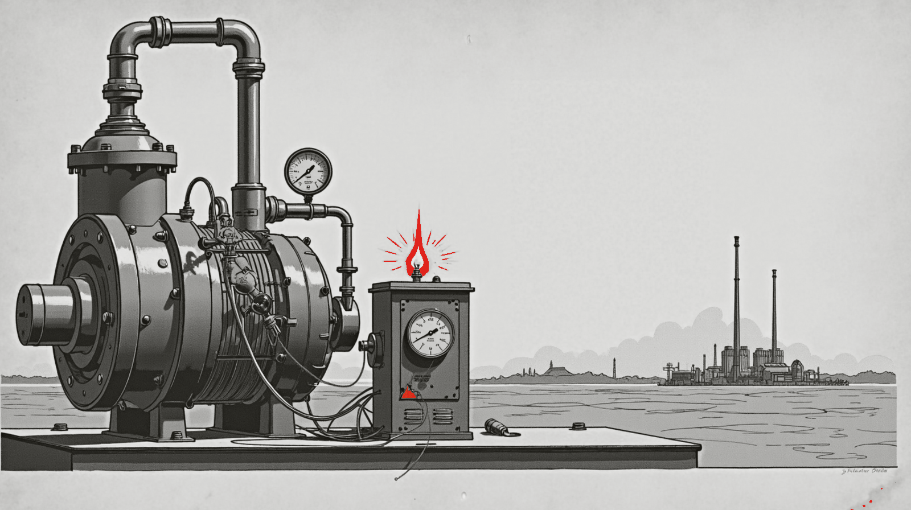

Jev decides about text. Wave decides about machines.
Last week TypeSafe shipped Jev and made "decide, don't chat" a category overnight: hand it text and a question, get back a calibrated yes, no or score in under a second. We have been building the same idea for a different input. Here is the map of model types, where Jev sits on it, and where Wave does.

Two things happened in September. A well-funded lab shipped a model that does not talk at all, and developers loved it. And a Reddit thread asked us how our tiny industrial model relates to it. The honest answer is that they are cousins: both are decision models, built to answer a narrow question fast instead of writing a paragraph. They differ in what they read, where they run, and who gets the weights. That difference is the whole story of why we build for the plant floor.
A general-purpose classifier that needs no training set.
Jev is TypeSafe AI's "System One" model, released to a waitlist on September 15 and opened to everyone on September 20. You send one block of text (a document, a ticket, a JSON state) plus a list of typed questions. It returns a probability for each question in a single forward pass. Three question types exist: yes or no, a choice among up to 255 options, and an ordered score with 2 to 10 levels. It generates no text. It cannot explain itself. That is the design, not a limitation someone forgot to fix.
The pitch is speed and price. TypeSafe quotes 70 to 500 ms per call and $0.042 per million input tokens with output free, and claims 40 to 400 times cheaper than frontier chat models on decision work. Independent testers found the real gap smaller but real: about five times faster and eight to nine times cheaper than a mid-size open chat model on the same routing job. Vercel said it was the fastest-adopted model in its gateway's history. On Hacker News, when a commenter called it "basically a zero-shot classifier", the CEO answered "exactly right". We think that is the most useful sentence written about it.
What Jev is not: open. There are no weights, no paper, no parameter count and no self-hosting. It is text only, with a 64k-token window. Its own docs list counting, arithmetic and dates as weak spots. Within a week the community had shipped small open reproductions on Qwen bases (OpenJev, NanoJev) that read a model's logits instead of generating, which tells you how portable the idea is even if the product is not.
Two questions place any model: what does it read, what does it return?
Most confusion about "which model do I need" clears up once you ask two questions. First, what is the input: human language, or what a machine emits (a window of telemetry, a log line, a serial dump)? Second, what comes out: a conversation, or a decision? Put those on two axes and the crowded field sorts itself into four corners.
Jev, Laya, the GLiClass family and the guard models all live in the lower left: language in, a decision out. Chat models live above them. The right-hand side is where a plant lives, and it is nearly empty. Time-series forecasters like TimesFM and Chronos-2 sit in the lower right and are genuinely good at "what will this signal do next", but they do not name a fault or read a log line. The Wave family was built to fill both right-hand corners with one set of models that speak to each other.
The vocabulary is the plant's, not the web's.
Ask a frontier chat model to reason over a robot's torque and force logs and it struggles. FactoryBench, an ETH Zurich benchmark published this May, put six frontier LLMs on question answering over real robot telemetry: all of them scored under 50% on structured reasoning and under 18% on decision tasks. The authors called it an industrial readiness gap. We call it the reason the small Wave tiers are trained from scratch.
A model trained on the web learns the web's tokens. A model trained from scratch on what machines emit learns the machine's: Modbus registers, Sparkplug B payloads, Prometheus and InfluxDB lines, syslog, a serial dump from a bench instrument. Wave Pico is 293,702,656 parameters trained on 18.2 billion tokens of that material. It is at chance on MMLU (23.2) by design, because it was never shown the web. It does one job: look at a window of sensor data and say whether the instrument is faulting, which fault it looks like, or that the rendering is unreadable and it will not guess. That last answer matters more in a plant than any other.
Why we care about this at all: RogerAI exists so people can run
models on hardware they own and put them on air for others. The
plant floor is the purest case of that. Data cannot leave the
building, the network to the floor is often air-gapped or
metered, a decision about a bearing has to happen in
milliseconds beside the bearing, and the person who needs the
answer is a technician, not an API. A hosted decision model, however good, cannot be on that floor. A 165 MB quantized model
on a single-board computer can. And if you want to hear it before you wire one up,
it is already on air: roger search lists it as
wave-pico-293m, a free band served from our own station.
One family, one SI scale, from the board beside the machine to the enterprise.
Each Wave tier is cut for the machine that has to run it. The three smallest are trained from scratch so the plant's vocabulary is the only one they know. From Giga up, a strong open base gets industrial training on top, because at that size a model is expected to hold its own on general questions too. The chart is the artifact you would actually download, quantized, on a log scale, with Jev marked where it belongs: nowhere on the disk.
Two of those bars are real artifacts that have passed their release gates. Wave Pico is the 293M model above, converted losslessly to four runtime formats and re-scored through each, and it is the one you can tune in to today. Wave Giga is built on Qwen3.8-27B (Apache-2.0) with the specialization merged into the weights; the shipped Q4_K_M quantization is 16.5 GB, fits one 32 GB card, and on a single workstation GPU it generates at 35.9 tokens per second and processes prompts at 298.6 at 8k context with two slots. It still holds its general ground: against the unmodified base, ARC went 82.5 to 84.5, HellaSwag 63.7 to 61.1, WinoGrande 75.5 to 72.9. Specialization did not make it narrow. It made it read telemetry.
Tera is where the plant's data meets the company's questions.
Pico reads one machine. Nano rolls up a dozen Picos into one state per zone. Giga reasons across the channels of a whole plant and names the asset condition that explains them together. Tera, at 80 to 120B, is the tier that correlates faults and trends across many plants and answers the questions a company actually asks of its operations: which line's decline matters given a size threshold, what the downtime cost, write the SQL for that, draft the report with only the numbers in the table.
That is a different skill from reading a sensor, and it is why Tera starts from a strong open base rather than from scratch. We are scoring candidate bases this month on an enterprise probe suite where every answer is machine-checked, never judged by another model, and the base that wins is the one with the best delta after a short specialization run, not the one with the best leaderboard number. Where does Jev fit in that company? Honestly, beside it. Routing the ticket, screening the email, triaging the log line by text: that is Jev's corner and it is a good corner. Reading the machine that produced the log line is ours.
| Jev | Wave Pico | Wave Giga | |
|---|---|---|---|
| Reads | text, 64k window | a window of telemetry, a log line | telemetry across channels, plus language |
| Returns | probabilities: yes/no, choice, score | fault, which fault, or "unreadable" | asset condition, plus a conversation |
| Runs | TypeSafe's cloud, API only | a single-board computer or any GPU, offline | one 32 GB card, offline |
| Weights | closed, params undisclosed | ours, from scratch, 293M | Apache-2.0 base, merged, 27B |
| Size on disk | none | ~165 MB quantized | 16.5 GB at Q4_K_M |
| Price | $0.042 per M input tokens | free on air now, or your own hardware | your own hardware, or on air via RogerAI |
| Cannot | explain, count, do arithmetic, read a sensor | chat, answer trivia, reason across machines | run on a Pi |
| Status | GA since Sept 20 | {{wave:pico.jev-vs-wave.table}} | {{wave:giga.jev-vs-wave.table}} |
Questions people actually ask
- Is Wave a competitor to Jev?
- No. Both are decision models, but Jev reads text and runs in TypeSafe's cloud; Wave reads what machines emit and runs on hardware you own, down to a single-board computer beside the machine. A plant could reasonably use both: Jev to route the maintenance ticket, Wave to read the pump that raised it.
- Can Jev read sensor data?
- Not as designed. It takes text, and its own documentation lists counting, arithmetic and dates as weak spots. You could paste numbers into it as text, but a decision model that was never trained on telemetry has no idea what a vibration spectrum or a Modbus register looks like. That is the gap the scratch-trained Wave tiers exist to close.
- Can I use a Wave model today?
- Yes. Wave Pico (293M) is on air right now as a free band on
RogerAI: run
roger searchand it is listed aswave-pico-293m, thenroger use wave-pico-293mgives your tools a local OpenAI-style endpoint that reaches it. Send it a window of telemetry and get a verdict back. The weights themselves are not published yet; Wave Giga (27B) has passed its release gate on an Apache-2.0 base and its public checkpoint waits on the founder's sign-off. - Why train small models from scratch instead of fine-tuning?
- Because the input is not language. A pretrained base has learned the web's vocabulary and would have to unlearn it to read a raw telemetry window. Below about 1.5B parameters we measured that scratch training on machine data is healthy and nothing is lost by skipping the web. From Giga up the calculus flips: at 27B a model is expected to converse and reason in general too, so those tiers start from a strong open base and get industrial training on top.
- Where does RogerAI come in?
- Every Wave tier is a model you host: on the board beside the
machine, on a server in the plant, or on your own GPU at home.
A model you run locally can also go on air as a band with
roger share, which is how anything on RogerAI is reached remotely, and exactly howwave-pico-293mis on air today from our station. Local or remote is a deployment choice, not a different product.